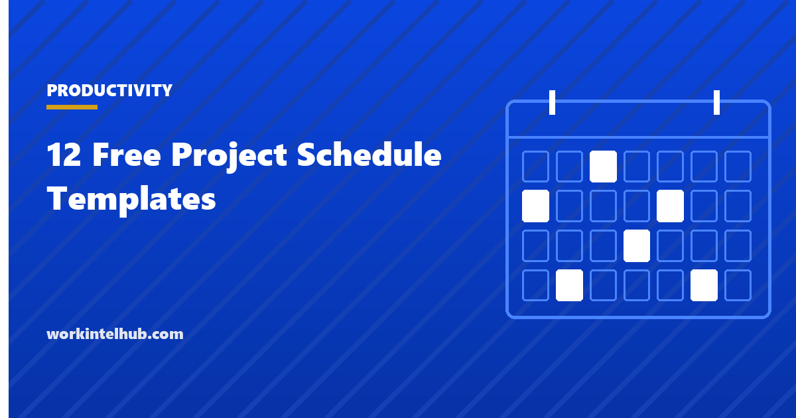

12 Free Project Schedule Templates

A schedule is the project's model of time: what happens, in what order, for how long, and who does it. It is more than a list of dates because the dates depend on each other; move one task and the ones after it move too. A schedule that captures those dependencies can answer the only question sponsors ask, which is when, and can show which tasks decide the answer.
Twelve schedules are here, because projects differ. Four general ones (task list, weekly Gantt, monthly phase and milestone), two that model dependencies and resources, and six for particular kinds of work: sprints, construction, events, rollouts, maintenance and training. The Excel workbook calculates durations, status and the critical path flag on the dependency schedule; Word and PDF carry the printable versions.
Download the templates
Free files: Word, Excel and PDF
Three files, free, no email required. Word to edit, Excel to track, PDF to print or share.
Templates open in Microsoft Word, Excel, Google Docs and Sheets, LibreOffice and any PDF reader. Free to use and adapt for your organisation.
The twelve schedules
| Schedule | Use |
|---|---|
| Simple task list schedule | Small projects; dates and status |
| Weekly Gantt schedule | One to four months; shaded weeks |
| Monthly phase schedule | Six months to two years; shaded months |
| Milestone schedule | Reporting against baseline |
| Dependency schedule | Projects where order matters; find the critical path |
| Resource-loaded schedule | Projects where people are the constraint |
| Sprint schedule | Agile teams |
| Construction schedule | Phases by trade with inspections |
| Event schedule | Run-of-day timing |
| Rollout schedule | Phased deployment by wave |
| Maintenance schedule | Recurring tasks with next-due dates |
| Training schedule | Sessions with capacity |
Dependencies and the critical path
Most tasks cannot start until something else finishes. The dependency schedule records that as a predecessor per task; the early start of a task is the early finish of its predecessor, and the longest chain of dependent tasks from start to finish is the critical path. Tasks on it have no slack: a day lost on any of them is a day lost on the project. Tasks off it have float and can slip without moving the end date. Knowing which is which is the difference between managing a schedule and watching one.
The Excel sheet asks you to mark the critical chain by hand, which is practical up to forty or fifty tasks. Beyond that, scheduling software that computes it is worth having; the timeline templates are the presentation layer either way.
Resource-loaded schedules
A schedule can be feasible in time and impossible in people. The resource-loaded sheet spreads each task's hours across weeks and totals by week, so a week that needs 90 hours from a person who has 35 is visible before it arrives. The resource planning templates extend this across projects, and the capacity planning templates cover the team-level view.
Keeping a schedule honest
- Baseline at approval; keep it; report variance against it.
- Update progress weekly with actual dates, not percentages that creep toward 90 and stay there.
- Re-plan from where you are, not from where the plan said you would be.
- When a critical task slips, ask what comes off the path, not who worked harder.
- Keep durations in working days; NETWORKDAYS excludes weekends, and a holiday range excludes your holidays.
Key takeaways
- A schedule models time with dependencies; the critical path is the chain that decides the end date.
- Choose the format for the project: task list, Gantt, milestone, dependency, resource-loaded, or a sector-specific schedule.
- Check resources by week, not just dates; a feasible schedule can be impossible in people.
- Baseline, update weekly with actuals, re-plan from reality.
Frequently asked questions
What is a project schedule?
The project's plan of time: tasks, their order and dependencies, durations, dates and owners, with milestones to report against. It differs from a timeline, which is the summary picture, and from a task list, which has no dependencies.
What is the critical path?
The longest chain of dependent tasks from the project's start to its end. Tasks on it have no float: a delay to any of them delays the project. Finding it tells you which tasks to protect and which can slip without harm.
How do I build a schedule in Excel?
List tasks with owner, start and end dates; use NETWORKDAYS for working-day durations; add a predecessor column for order; and use formulas for status. For weekly or monthly bars, use the Gantt grids in the timeline templates. For automatic critical path and resource levelling, use scheduling software.
What is a resource-loaded schedule?
A schedule that spreads each task's effort across time periods and totals demand per person or role per week, so overloads show before they happen. It is the link between the schedule and the resource plan.
How often should the schedule be updated?
Weekly on active projects, with actual start and finish dates and remaining durations rather than percentage complete. Milestones are reported against the baseline in the status report.